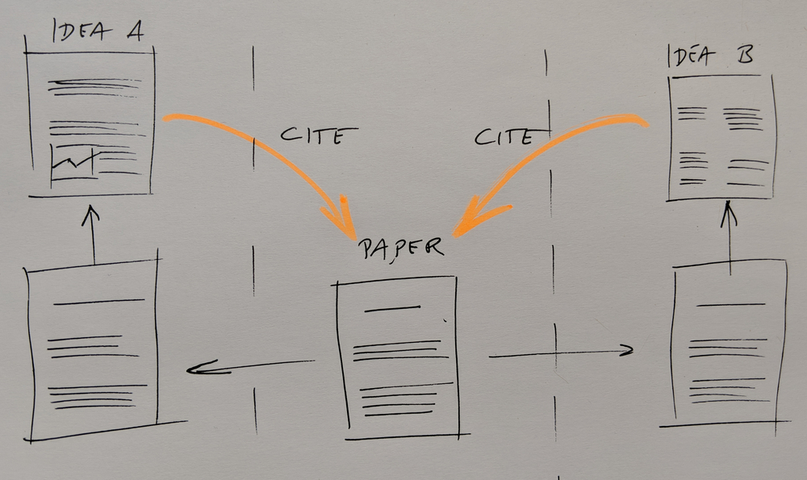
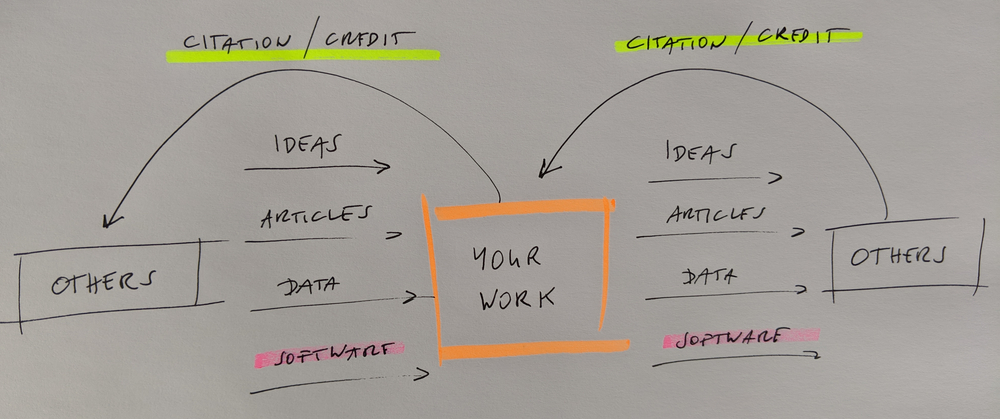
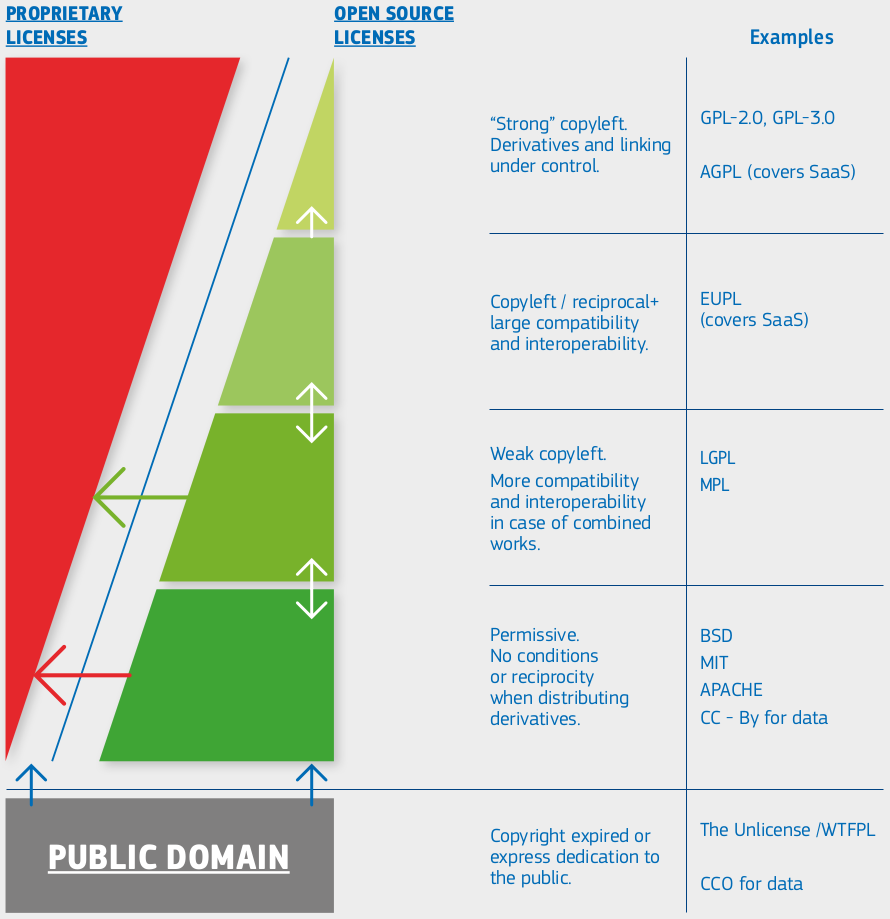

Practical advice for software licensing and citations
These materials are adopted from CodeRefinery lesson Social Coding.
This is not legal advice! Please always consult your organizations legal team when in doubt.
“We require that all computer code used for modeling and/or data analysis
that is not commercially available be deposited in a publicly accessible repository
upon publication. In rare exceptional cases where security
concerns or competing commercial interests pose a conflict, code-sharing
arrangements that still facilitate reproduction of the work should be
discussed with your Editor no later than the revision stage.”
“An inherent principle of publication is that others should be able to
replicate and build upon the authors’ published claims. A condition of
publication in a Nature Research journal is that authors are required to make
materials, data, code, and associated protocols promptly available to readers
without undue qualifications. Any restrictions on the availability of
materials or information must be disclosed to the editors at the time of
submission. Any restrictions must also be disclosed in the submitted
manuscript.”
These policies may surface during data stewardship consultations, not just at submission time.
However a study showed that despite
these policies, many people still do not share their code 😞. This paper
includes samples of charming author responses such as:
“When you approach a PI for the source codes and raw data, you better explain
who you are, whom you work for, why you need the data and what you are going
to do with it.”
Fear of being scooped:
A license can avoid it, and you can release when you are ready. Anyway, it is
very unlikely that others will understand your code and publish before you
without involving you in a collaboration. Sharing is a form of publishing.
Exposes possibly “ugly code”:
In practice almost nobody will judge the quality of your code.
“Software, once written, is never really finished” (N. Asparouhova).
Others may find bugs and mistakes:
Isn’t this good? Would you not like to use a code which gives people the chance to locate bugs?
If you don’t release, people will assume there are bugs anyway.
Others may require support and ask too many questions:
This can become a problem: use tools and community and protect your time.
You aren’t required to support anyone. You can also “archive” a repository to disable
most forms of interaction (issues, PRs). Also a note in README on support level helps.
Fear of losing control over the direction of the project:
Open source does not mean everybody can change your version.
“Bad” derivative projects may appear:
It will be clear which is the official version.
Code reusability: What contributes to reusability?
What contributes to you being able to reuse stuff that others make, and others
(or you) being able to reuse your stuff? When you find a repository with code
you would like to reuse, you may look at the following things to determine its
reusability:
Date of last code change: Is the project abandoned?
Release history: How about stability and backwards-compatibility?
Versioning: Will it be painful to upgrade?
Number of open pull requests and issues: Are they followed-up?
Installation instructions: Will it be difficult to get it running?
Example: Will it be difficult to get started?
License: Am I allowed to use it?
Contribution guide: How to contribute and decision process?
Code of conduct: How to make clear which behaviors are unacceptable and
discouraged? How violations of Code of conduct will be handled?
Trust and community: Somebody you trust recommended it?
… most of which you can learn in the CodeRefinery workshop!
European Commission, Directorate-General for Informatics, Schmitz, P., European Union Public Licence (EUPL): guidelines July 2021, Publications Office, 2021, https://data.europa.eu/doi/10.2799/77160
Comments:
Arrows represent compatibility (A -> B: B can reuse A)
Proprietary/custom: Derivative work typically not possible (no arrow goes from proprietary to open)
Permissive: Derivative work does not have to be shared
Copyleft/reciprocal: Derivative work must be made available under the same license terms
NC (non-commercial) and ND (non-derivative) exist for data licenses but not really for software licenses
Is it enough to make the code public for the code to remain findable and accessible?
No. Because nothing prevents me from deleting my GitHub repository or
rewriting the Git history and we have no guarantee that GitHub will still be around in 10 years.
Make your code citable and persistent:
Get a persistent identifier (PID) such as DOI in addition to sharing the
code publicly, by using services like Zenodo or
similar services.
Checklist for making a release of your software citable:
Assigned an appropriate license
Described the software using an appropriate metadata format
Clear version number
Authors credited
Procured a persistent identifier
Added a recommended citation to the software documentation
This checklist is adapted from: N. P. Chue Hong, A. Allen, A. Gonzalez-Beltran,
et al., Software Citation Checklist for Developers (Version 0.9.0). Zenodo.
2019b. (DOI)
A. M. Smith, D. S. Katz, K. E. Niemeyer, and FORCE11 Software Citation
Working Group, “Software citation principles,” PeerJ Comput. Sci., vol. 2,
no. e86, 2016 (DOI)
D. S. Katz, N. P. Chue Hong, T. Clark, et al., Recognizing the value of
software: a software citation guide [version 2; peer review: 2 approved].
F1000Research 2021, 9:1257 (DOI)
N. P. Chue Hong, A. Allen, A. Gonzalez-Beltran, et al., Software Citation
Checklist for Authors (Version 0.9.0). Zenodo. 2019a. (DOI)
N. P. Chue Hong, A. Allen, A. Gonzalez-Beltran, et al., Software Citation
Checklist for Developers (Version 0.9.0). Zenodo. 2019b. (DOI)
Recommended format for software citation is to ensure the following information
is provided as part of the reference (from Katz, Chue Hong, Clark,
2021 which also contains
software citation examples):
Creator
Title
Publication venue
Date
Identifier
Version
Type
FAIR for Research Software (FAIR4RS)
The FAIR4RS Principles adapt the original FAIR data principles to improve the Findability, Accessibility, Interoperability, and Reusability of research software. They provide guidelines to make research software more open, discoverable, citable, and reusable, which supports reproducibility and open science. The summary of the FAIR4RS below is a compressed version of the principles listed in Barker, Michelle, et al. “Introducing the FAIR Principles for research software.” Scientific Data 9.1 (2022): 622.
Findable: Software should have a globally unique and persistent identifier
(e.g. clear versioning of releases, DOI from Zenodo when depositing a software release, software metadata in citation file).
Accessible: Software and metadata should be retrievable using open protocols
(e.g. downloading from GitHub or Zenodo).
Interoperable: Software should use open formats and standards to work with other tools
(e.g. input/output files in CSV, dependencies listed in requirements.txt or environment.yml, configuration files in yaml).
Reusable: Software should have clear licensing, documentation, and provenance
(e.g. a standard license and a README with usage instructions, authors listed with ORCIDs).
There are great resources to self-evaluate the FAIRness of your research software:
FAIR Software Checklist which provides a questionnaire and even a badge of how FAIR the software is
FAIR Software NL highlights with nice visuals the five most important elemnts of FAIR4RS (1. Public accessible repository with version control; 2. License; 3. Software registry; 4. Software citation file; 5. Software quality checklist)
Keypoints
You cannot ignore licensing: default is “no one can make copies or
derivative works”.
Citation.cff files can make it easier for others to cite software and provide credit.
Social coding
Objectives
Get familiar with terminology around licensing.
Practical advice for software licensing and citations
These materials are adopted from CodeRefinery lesson Social Coding. This is not legal advice! Please always consult your organizations legal team when in doubt.
Relevance for data stewards
You may not be writing or releasing software yourself, but you are often asked to:
Advise on licensing choices
Interpret reuse conditions
Assess whether software outputs can be shared
Help make software citable and compliant with policy.
Social coding is as much about people, rules, and expectations as it is about tools.
Comparing sharing papers and sharing code

Citation as one form of academic credit to motivate sharing papers.
Sharing papers and academic credit:
The goal is maximum visibility and maximum reuse.
The more interesting science is done referencing my paper, the better for me.
Nobody actively tries to limit the reach of their papers.
Different ways we can benefit from sharing code.
Sharing code:
“I did all the ground work and they get to do the interesting science?”
Sharing code and encouraging derivative work may boost your academic impact.
But will your work be visible if it is used two levels deep down?
Journal policies as motivation for sharing
From Science editorial policy:
From Nature editorial policy:
These policies may surface during data stewardship consultations, not just at submission time.
However a study showed that despite these policies, many people still do not share their code 😞. This paper includes samples of charming author responses such as:
Motivation for open source software
Enable derivative work
Do not lock yourself out of own code
Attract developers who want to be able to show the coding work on their CVs
Tightly regulated domains require open source
Open-source software (OSS) can lead to more engagement from industry which may lead to more impact
If it’s not open, it is not likely to become standard
Sharing software is also scary
Fear of being scooped: A license can avoid it, and you can release when you are ready. Anyway, it is very unlikely that others will understand your code and publish before you without involving you in a collaboration. Sharing is a form of publishing.
Exposes possibly “ugly code”: In practice almost nobody will judge the quality of your code. “Software, once written, is never really finished” (N. Asparouhova).
Others may find bugs and mistakes: Isn’t this good? Would you not like to use a code which gives people the chance to locate bugs? If you don’t release, people will assume there are bugs anyway.
Others may require support and ask too many questions: This can become a problem: use tools and community and protect your time. You aren’t required to support anyone. You can also “archive” a repository to disable most forms of interaction (issues, PRs). Also a note in README on support level helps.
Fear of losing control over the direction of the project: Open source does not mean everybody can change your version.
“Bad” derivative projects may appear: It will be clear which is the official version.
Code reusability: What contributes to reusability?
What contributes to you being able to reuse stuff that others make, and others (or you) being able to reuse your stuff? When you find a repository with code you would like to reuse, you may look at the following things to determine its reusability:
Date of last code change: Is the project abandoned?
Release history: How about stability and backwards-compatibility?
Versioning: Will it be painful to upgrade?
Number of open pull requests and issues: Are they followed-up?
Installation instructions: Will it be difficult to get it running?
Example: Will it be difficult to get started?
License: Am I allowed to use it?
Contribution guide: How to contribute and decision process?
Code of conduct: How to make clear which behaviors are unacceptable and discouraged? How violations of Code of conduct will be handled?
Trust and community: Somebody you trust recommended it?
… most of which you can learn in the CodeRefinery workshop!
How our work connects to the work of others

Whether and what we can share depends on how we obtained the components.
Our work depends on outputs from others. Research of others depends on our outputs.
Whether you can share your output depends on how you obtained your input.
A repository that is private today might become public one day.
Sometimes “OTHERS” are you yourself in the future in a different group/job.
Our code often starts by changing other code: derivative work.
Software licenses matter. And this is what we will discuss in the next episode.
Copyright
Trademark: Protects a name/brand from impersonation.
Patent: Protects a novel, non-obvious, technical invention.
Copyright: Protects creative expression: software, writing, graphics, photos, certain datasets, this presentation. Practically “forever” (lifetime of author + 70 years).
Copyright controls whether and how we can distribute the original work or the derivative work.
Taxonomy of software licenses
“Software licensing and open source explained with cakes”.

European Commission, Directorate-General for Informatics, Schmitz, P., European Union Public Licence (EUPL): guidelines July 2021, Publications Office, 2021, https://data.europa.eu/doi/10.2799/77160
Comments:
Arrows represent compatibility (A -> B: B can reuse A)
Proprietary/custom: Derivative work typically not possible (no arrow goes from proprietary to open)
Permissive: Derivative work does not have to be shared
Copyleft/reciprocal: Derivative work must be made available under the same license terms
NC (non-commercial) and ND (non-derivative) exist for data licenses but not really for software licenses
Great resource for comparing software licenses: Joinup Licensing Assistant
Provides comments on licenses
Easy to compare licenses (example)
Joinup Licensing Assistant - Compatibility Checker
Not biased by some company agenda
As we do here, data stewards should be careful not to give legal advice, but can:
Explain common licenses
Highlight compatibility issues
Point researchers to institutional or legal support when needed.
Software citation
Questions
Is putting software on GitHub/GitLab/… publishing?
Where to publish software?
How can software be cited?
How can I make my software citeable?
Is putting software on GitHub/GitLab/… publishing?
FAIR principles. (c) Scriberia for The Turing Way, CC-BY.
Is it enough to make the code public for the code to remain findable and accessible?
No. Because nothing prevents me from deleting my GitHub repository or rewriting the Git history and we have no guarantee that GitHub will still be around in 10 years.
Make your code citable and persistent: Get a persistent identifier (PID) such as DOI in addition to sharing the code publicly, by using services like Zenodo or similar services.
How to make your software citable
Checklist for making a release of your software citable:
Assigned an appropriate license
Described the software using an appropriate metadata format
Clear version number
Authors credited
Procured a persistent identifier
Added a recommended citation to the software documentation
This checklist is adapted from: N. P. Chue Hong, A. Allen, A. Gonzalez-Beltran, et al., Software Citation Checklist for Developers (Version 0.9.0). Zenodo. 2019b. (DOI)
Our practical recommendations:
Add a file called CITATION.cff (example).
Get a digital object identifier (DOI) for your code on Zenodo (example).
Step-by-step recipe for how to make your GitHub project citable using Zenodo.
Make it as easy as possible: clearly say what you want cited.
This is an example of a simple
CITATION.cfffile:More about
CITATION.cfffiles:GitHub now supports CITATION.cff files
Web form to create, edit, and validate CITATION.cff files
Video: “How to create a CITATION.cff using cffinit”
Papers with focus on scientific software
Where can I publish papers which are primarily focused on my scientific software? Great list/summary is provided in this blog post: “In which journals should I publish my software?” (Neil P. Chue Hong)
How to cite software
Great resources
A. M. Smith, D. S. Katz, K. E. Niemeyer, and FORCE11 Software Citation Working Group, “Software citation principles,” PeerJ Comput. Sci., vol. 2, no. e86, 2016 (DOI)
D. S. Katz, N. P. Chue Hong, T. Clark, et al., Recognizing the value of software: a software citation guide [version 2; peer review: 2 approved]. F1000Research 2021, 9:1257 (DOI)
N. P. Chue Hong, A. Allen, A. Gonzalez-Beltran, et al., Software Citation Checklist for Authors (Version 0.9.0). Zenodo. 2019a. (DOI)
N. P. Chue Hong, A. Allen, A. Gonzalez-Beltran, et al., Software Citation Checklist for Developers (Version 0.9.0). Zenodo. 2019b. (DOI)
Recommended format for software citation is to ensure the following information is provided as part of the reference (from Katz, Chue Hong, Clark, 2021 which also contains software citation examples):
Creator
Title
Publication venue
Date
Identifier
Version
Type
FAIR for Research Software (FAIR4RS)
The FAIR4RS Principles adapt the original FAIR data principles to improve the Findability, Accessibility, Interoperability, and Reusability of research software. They provide guidelines to make research software more open, discoverable, citable, and reusable, which supports reproducibility and open science. The summary of the FAIR4RS below is a compressed version of the principles listed in Barker, Michelle, et al. “Introducing the FAIR Principles for research software.” Scientific Data 9.1 (2022): 622.
Findable: Software should have a globally unique and persistent identifier
(e.g. clear versioning of releases, DOI from Zenodo when depositing a software release, software metadata in citation file).
Accessible: Software and metadata should be retrievable using open protocols
(e.g. downloading from GitHub or Zenodo).
Interoperable: Software should use open formats and standards to work with other tools
(e.g. input/output files in CSV, dependencies listed in
requirements.txtorenvironment.yml, configuration files in yaml).Reusable: Software should have clear licensing, documentation, and provenance
(e.g. a standard license and a
READMEwith usage instructions, authors listed with ORCIDs).There are great resources to self-evaluate the FAIRness of your research software:
FAIR Software Checklist which provides a questionnaire and even a badge of how FAIR the software is
FAIR Software NL highlights with nice visuals the five most important elemnts of FAIR4RS (1. Public accessible repository with version control; 2. License; 3. Software registry; 4. Software citation file; 5. Software quality checklist)
Keypoints
You cannot ignore licensing: default is “no one can make copies or derivative works”.
Citation.cff files can make it easier for others to cite software and provide credit.